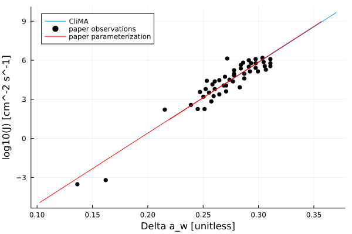

Ice Nucleation
The IceNucleation.jl module includes the parameterization of activation of dust aerosol particles into ice crystals via deposition of water vapor and water activity based parameterization of immersion freezing. These are heterogeneous ice nucleation processes. The parameterization for deposition on dust particles is an implementation of the empirical formulae from [32] and is valid for two types of dust particles: Arizona Test Dust and desert dust from Sahara. The parameterization for immersion freezing is an implementation of [33] and is valid for droplets containing sulphuric acid.
Future work includes adding parameterizations for other nucleation paths such as heterogeneous immersion freezing or homogeneous freezing and modeling the competition between them.
Activated fraction for deposition freezing on dust
The parameterization models the activated fraction as an empirical function of ice saturation ratio, see eq. (3) in [32].
\[\begin{equation} f_i(S_i) = exp[a(S_i - S_0)] - 1 \end{equation}\]
where:
- $f_i$ is the activated fraction (the ratio of aerosol particles acting as ice nuclei to the total number of aerosol particles),
- $S_i$ is the ice saturation ratio (the ratio of water vapor partial pressure and the water vapor partial pressure at saturation over ice),
- $S_0$ is the threshold ice saturation ratio,
- $a$ is a scaling parameter dependent on aerosol properties and temperature.
Limited experimental values for the free parameters $S_0$ and $a$ can be found in [32]. Both parameters are dependent on aerosol properties and temperature.
For a $f_i$ values above 0.08 or $S_i$ between 1.35 and 1.5, freezing occurs in a different ice nucleation mode (either a second deposition or other condensation type mode).
ABIFM for Sulphuric Acid Containing Droplets
Water Activity-Based Immersion Freezing Model (ABFIM) is a method of parameterizing immersion freezing inspired by the time-dependent classical nucleation theory (CNT). More on CNT can be found in [34]. The nucleation rate coefficient, $J$, describes the number of ice nuclei formed per unit area per unit time and can be determined by the water activity, $a_w$. This parameterization follows [33], [35], [36], and [37]. In this model, aerosols are assumed to contain an insoluble and soluble material. When immersed in water, the soluble material diffuses into the liquid water to create a sulphuric acid solution.
Using empirical coefficients, $m$ and $c$, from [33], the heterogeneous nucleation rate coefficient in units of $cm^{-2}s^{-1}$ can be determined by the linear equation
\[\begin{equation} log_{10}J_{ABIFM} = m \Delta a_w + c \end{equation}\]
Our source code for the nucleation rate coefficient returns $J$ in base SI units.
$\Delta a_w$is the difference between the water activity of the droplet, $a_w$, and the water activity of ice at the same temperature, $a_{w,ice}(T)$. From [35],
\[\begin{equation} a_w = \frac{p_{sol}}{p_{sat}} \end{equation}\]
\[\begin{equation} a_{w,ice} = \frac{p_{i,sat}}{p_{sat}} \end{equation}\]
where $p_{sol}$ is saturated vapor pressure of water above solution, $p_{sat}$ is saturated vapor pressure above pure liquid water, and $p_{i,sat}$ is saturated vapor pressure above ice. $p_{sol}$ is determined in mbar using a parameterization for supercooled, binary $H_2SO_4/H_2O$ solution from [37] which is valid for $185K < T < 235K$:
\[\begin{equation} ln(p_{sol}) = 23.306 - 5.3465x + 12xw_h - 8.19xw_h^2 + \frac{1}{T}(-5814 + 928.9x - 1876.7xw_h) \end{equation}\]
where $x$ is the weight fraction of sulphuric acid in the droplets (i.e. if droplets are 10% sulphuric acid by mass, $x = 0.1$), $w_h = 1.4408x$, and temperature is in Kelvins.
Once $J_{ABIFM}$ is calculated, it can be used to determine the ice production rate, $P_{ice}$, per second via immersion freezing.
\[\begin{equation} P_{ice} = J_{ABIFM}A(N_{tot}-N_{ice}) \end{equation}\]
where $A$ is surface area of an individual ice nuclei, $N_{tot}$ is total number of ice nuclei, and $N_{ice}$ is number of ice crystals already in the system.
Homogeneous Freezing for Sulphuric Acid Containing Droplets
Homogeneous freezing occurs when supercooled liquid droplets freeze on their own. Closly based off [38], this parameterization determines a homoegneous nucleation rate coefficient, $J_{hom}$, using water activity. The change in water activity, $\Delta a_w(c,T,P)$, can be found in the same fashion that it is determined under the ABIFM section above. It is then used to empirically calculate $J_{hom}(\Delta a_w)$ with units of $cm^{-3}s^{-1}$.
The nucleation rate coefficient is determined with the cubic function from [38]
\[\begin{equation} logJ_{hom} = -906.7 + 8502 \Delta a_w - 26924(\Delta a_w)^2 + 29180(\Delta a_w)^3 \end{equation}\]
This parameterization is valid only when $0.26 < \Delta a_w < 0.36$ and $185K < T < 235K$.
ABIFM Example Figures
The following plot shows $J$ as a function of $\Delta a_w$ as compared to figure 1 in Knopf & Alpert 2013. Solution droplets were assumed to contain a constant 10% wt. sulphuric acid. Changing the concentration will simply shift the line, following Knopf & Alpert's parameterization. As such, this plot is just to prove that $J$ is correctly parameterized as a function of $\Delta a_w$, with no implications of whether $\Delta a_w$ is properly parameterized. For more on water activity, please see above section.
include("ice_nucleation_plots/KnopfAlpert2013_fig1.jl")"/home/runner/work/CloudMicrophysics.jl/CloudMicrophysics.jl/docs/build/Knopf_Alpert_fig_1.svg"
The following plot shows J as a function of temperature as compared to figure 5a in Knopf & Alpert 2013.
include("ice_nucleation_plots/KnopfAlpert2013_fig5.jl")CairoMakie.Screen{SVG}
 Note that water activity of the droplet was assumed equal to relative humidity so that:
Note that water activity of the droplet was assumed equal to relative humidity so that:
\[\begin{equation} a_{w} = \frac{p_{sol}(x_{sulph} = 0, T = T_{dew})}{p_{sat}} \end{equation}\]
where T_dew is the dewpoint (in this example it is -45C).
It is also important to note that this plot is reflective of cirrus clouds and shows only a very small temperature range. The two curves are slightly off because of small differences in parameterizations for vapor pressures.